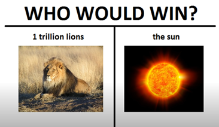

Competitor #1
Lions are at the top of the food chain and are quite powerful creatures. They are carnivorous animals that have to hunt and kill to survive.

The question
A commonly sought after question: Who would win in a fight? One trillion lions or the sun? It's a question with varying answers depending on the imagination and scientific understanding of who you ask.
 Learn More...The Science
There is a lot more to consider than what you may initially think when deciding your answer, luckily there are people with enough time to spare who can run these numbers and calculations for us. In the media tab of this website is a video discussing the science involved in this timeless question.
 Learn More...
Learn More...
The Answer
While there may be a clear cut answer to this question, like many answers, you can derive more questions from it to create even more scenarios that push science and understanding to the limit.
Learn More...